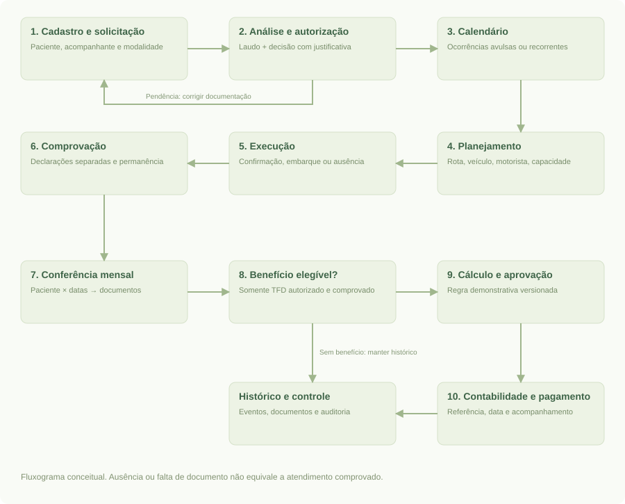
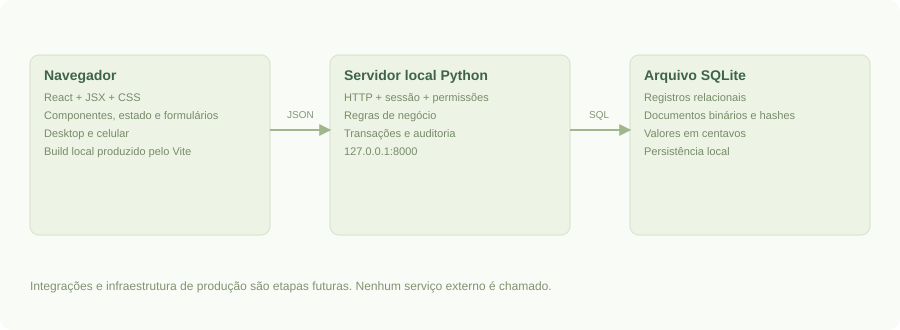
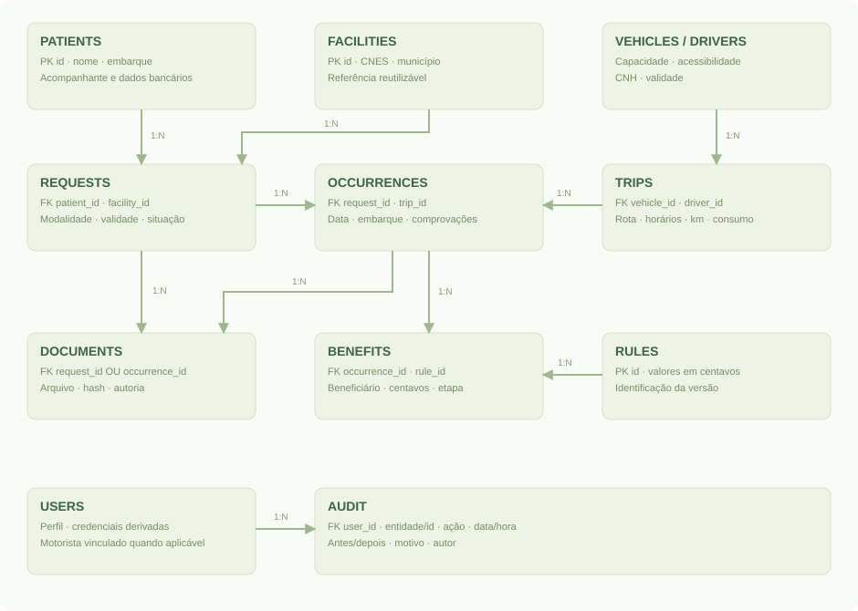

Projeto acadêmico · Tecnologia da Informação
Projeto acadêmico · Tecnologia da InformaçãoMacaparana
Saúde
Documentação do projeto
Sistema integrado de gestão de TFD, transporte sanitário e deslocamentos em saúde.
Curso não informado
Disciplina não informada
Professor não informado
Integrantes não informados
29 de setembro de 2026 · Versão 1.1
Demonstração com dados exclusivamente fictícios. Não representa implantação, validação jurídica ou homologação municipal.
- 1. Apresentação
- 2. Escopo da entrega
- 3. Requisitos e rastreabilidade
- 4. Regras de negócio
- 5. Processo e casos de uso
- 6. Arquitetura e tecnologias
- 7. Modelo de dados
- 8. Interface e protótipo
- 9. Segurança, proteção de dados e limites
- 10. Instalação e operação
- 11. Plano de testes e evidências
- 12. Indicadores e proposta de piloto
- 13. Evolução e cronograma proposto
- 14. Referências e origem dos requisitos
1. Apresentação
Macaparana Saúde — Sistema Integrado de Gestão de Deslocamentos em Saúde é uma proposta acadêmica acompanhada de um demonstrador funcional. Seu objetivo é organizar a solicitação de atendimento fora do município, o transporte, a comprovação e o acompanhamento das ajudas de custo, preservando vínculos entre os registros.
O trabalho responde ao problema e aos requisitos fornecidos pelo solicitante, atribuídos à rotina municipal de Macaparana/PE. Não foram realizadas entrevistas presenciais, validação jurídica, coleta de dados municipais ou implantação real. A base de demonstração é inteiramente fictícia.
O produto entregue reúne três componentes: sistema web local executável; protótipo de alta fidelidade, navegável e documentado por capturas; documentação de requisitos, arquitetura, dados, uso, testes e evolução. O recorte adotado permite demonstrar um fluxo completo dentro do prazo acadêmico, com simplificações declaradas.
1.1 Problema
O enunciado descreve a necessidade de integrar atividades de TFD, regulação, transporte, financeiro, faturamento e controle interno. Informações de pacientes, viagens e comprovações precisam ser conciliadas para responder quem viajou, quem foi atendido, quais documentos comprovam cada evento e qual é a situação de eventual benefício.
A hipótese de trabalho é que registros desconectados favorecem retrabalho, duplicidades e dificuldade de rastreamento. Essa hipótese vem da proposta fornecida e deve ser verificada em diagnóstico municipal; não é um resultado empírico deste trabalho.
1.2 Público-alvo e partes interessadas
| Público | Necessidade principal |
|---|---|
| Pacientes e acompanhantes | Acesso organizado ao deslocamento e orientação sobre documentos |
| Cidadãos do transporte sanitário | Viagem para consulta sem enquadramento artificial em TFD |
| TFD e regulação | Analisar, autorizar, agendar e comprovar |
| Transporte e motoristas | Planejar capacidade, confirmar passageiros e registrar execução |
| Financeiro e contabilidade | Conferir benefícios, preparar folha e acompanhar pagamento |
| Faturamento e controle interno | Consultar origem, pendências, indicadores e documentos |
| Gestão municipal | Avaliar resultados e planejar melhorias |
1.3 Objetivos
Objetivo geral: demonstrar uma solução integrada e rastreável para os deslocamentos de pacientes do SUS de Macaparana.
- Centralizar cadastros e referências reutilizáveis.
- Distinguir solicitação TFD, transporte sanitário, atendimento e benefício.
- Organizar recorrências e datas avulsas entre competências.
- Apoiar planejamento, confirmação assistida, embarque e encerramento da viagem.
- Conciliar comprovantes do paciente e do acompanhante de forma independente.
- Registrar etapas financeiras, sem executar transferências bancárias.
- Disponibilizar consulta do histórico, indicadores e auditoria.
2. Escopo da entrega
2.1 Implementado no demonstrador
Interface React integrada à API Python: login por perfis; cadastro de paciente e acompanhante vinculado; unidades com CNES informado manualmente; solicitações; anexo de laudo; análise e autorização; agenda recorrente e avulsa; veículos e motoristas; viagens com horário; validação de conflitos, lotação e acessibilidade; confirmação manual; embarque e ausência; quilômetros, consumo e custo real; anexos e comprovação; conferência mensal; benefícios demonstrativos; exportação CSV; registro do fluxo até pagamento; auditoria de alterações e downloads.
Os dados são persistidos em SQLite, incluindo o conteúdo dos anexos. A interface consulta uma API local; não depende de conexão com sistemas externos. A aplicação funciona após encerrar e reiniciar o servidor, preservando os registros salvos.
2.2 Simplificações conscientes
| Tema | Recorte implementado | Evolução necessária |
|---|---|---|
| Acompanhante | Um acompanhante atual por paciente e autorização por solicitação | Cadastro independente, múltiplos vínculos e histórico por evento |
| Tratamento | Solicitação autorizada agrupa ocorrências únicas por data | Entidade tratamento independente, suspensões e revisão de séries |
| Trechos | Reserva de capacidade durante toda a ida e volta | Assentos liberados e ocupados por trecho, ida e retorno independentes |
| Viagens | Saída e retorno no mesmo dia; um destino principal e rota textual | Viagens de vários dias, múltiplas escalas estruturadas e otimização |
| Permanência | Texto relacionado ao atendimento | Períodos estruturados, pernoites e validação de regras específicas |
| Benefícios | Valor fixo ilustrativo por ocorrência e beneficiário | Tipos, vigência jurídica, elegibilidade, distância, diárias e valores homologados |
| Regras | Última versão no momento do cálculo; valor preservado após gerar | Seleção por vigência aplicável à data e processo de aprovação normativa |
| Cadastros | Criação e consulta; sem exclusão nem edição geral | Retificações com justificativa, inativação, prevenção de duplicidades avançada |
| Comprovação | Vínculo a uma ocorrência que exige embarque na viagem | Fluxos de transporte próprio, permanência e comprovação independente da frota |
| Financeiro | Registro de etapas por benefício e CSV consolidado | Lotes formais, segregação de aprovação, integração contábil e conciliação bancária |
| Contas | Seis usuários demonstrativos pré-cadastrados | Gestão de usuários, redefinição de senha, MFA e vínculo de vários motoristas |
2.3 Fora desta versão
Integrações e-SUS APS, CNES/CadSUS e produção oficial; consultas a APIs externas; WhatsApp ou SMS; mapa e cálculo automático de distância; aplicativo nativo; operação offline; IA; exportação em leiautes oficiais; manutenção de frota; gestão documental com assinatura e versionamento; migração de dados; infraestrutura de produção e piloto real.
O arquivo CSV é uma folha demonstrativa para conferência, não um arquivo homologado de faturamento ou transmissão a sistemas oficiais.
3. Requisitos e rastreabilidade
Legenda: I = implementado no recorte; P = parcial/simplificado; F = evolução futura. Os códigos identificam requisitos do trabalho, não normas oficiais.
| Código | Requisito | Situação e evidência |
|---|---|---|
| RF01 | Manter pacientes, endereço e ponto de embarque | I — Pacientes; teste de fluxo completo |
| RF02 | Manter acompanhante e dados bancários pertinentes | P — vínculo simples e campo bancário textual; sem validação bancária |
| RF03 | Reutilizar unidade de referência com CNES e especialidade | P — referência reutilizada; CNES só formato; especialidade na solicitação |
| RF04 | Anexar laudo e analisar solicitação | I — autorização bloqueada sem laudo |
| RF05 | Distinguir TFD de transporte sanitário | I — modalidades separadas; transporte não gera benefício TFD |
| RF06 | Gerar recorrências semanais e datas avulsas | I — calendário; restrição única por solicitação/data |
| RF07 | Manter continuidade entre competências | I — uma autorização pode gerar ocorrências em vários meses |
| RF08 | Planejar veículos, motoristas, capacidade e acessibilidade | I — Viagens; testes de conflito, capacidade e CNH |
| RF09 | Alocar por data e trecho | P — data e rota de ida/volta; reserva integral, sem liberação intermediária |
| RF10 | Registrar alterações de alocação com justificativa | I — retirada preserva agenda e gera auditoria; reatribuição disponível |
| RF11 | Registrar km reais, consumo e custos | I — encerramento da viagem; custos informados manualmente |
| RF12 | Confirmar antecipadamente com alternativa assistida | P — confirmação assistida; sem envio de mensagem |
| RF13 | Alimentar lista operacional do motorista | I — perfil restrito, confirmação, embarque, ausência e lista imprimível |
| RF14 | Comprovar paciente e acompanhante separadamente | I — declarações e estados independentes |
| RF15 | Conferir competência em tabela compacta de datas | I — cada célula abre a ocorrência e seus documentos |
| RF16 | Conciliar viagem, atendimento e permanência | P — vínculo e texto de permanência, sem conciliação automática externa |
| RF17 | Calcular ajuda de custo e preservar regra aplicada | P — cálculo ilustrativo por ocorrência; versão vinculada ao benefício |
| RF18 | Encaminhar folha e acompanhar pagamento | P — etapas e CSV; nenhum envio ou pagamento automático |
| RF19 | Preparar produção para sistemas oficiais | F — falta definição e homologação de leiautes |
| RF20 | Relacionar indicadores a eventos de origem | P — indicadores básicos, telas de origem e auditoria; BI avançado futuro |
| RF21 | Integrar e-SUS, CNES, mapas e WhatsApp quando autorizado | F — pontos de evolução documentados; nenhuma API presumida |
| RF22 | Disponibilizar capacitação e suporte | P — manual e roteiro; operação assistida municipal futura |
| RF23 | Executar e medir piloto municipal | F — plano proposto; nenhum resultado real reivindicado |
3.1 Requisitos não funcionais
| Código | Requisito | Implementação ou limite |
|---|---|---|
| RNF01 | Persistência e integridade | SQLite, chaves estrangeiras, transações, unicidade de agenda e benefício |
| RNF02 | Controle de acesso | Sessão no servidor e permissões por ação; motorista recebe projeção reduzida |
| RNF03 | Rastreabilidade | Autor, horário UTC, ação, entidade, antes/depois e justificativa quando aplicável |
| RNF04 | Usabilidade | Português, busca, formulários, mensagens de erro e estados explícitos |
| RNF05 | Responsividade | Navegação adaptável; verificação em 1440 px e 390 px |
| RNF06 | Portabilidade da demonstração | Python 3.11+ e navegador; sem bibliotecas externas em execução |
| RNF07 | Segurança de dados | Controles básicos de aplicação; sem atestado de conformidade ou uso real |
| RNF08 | Continuidade | Procedimento de cópia/restauração; backup automático não implementado |
| RNF09 | Desempenho | Adequado à base de demonstração; sem ensaio de carga municipal |
| RNF10 | Acessibilidade | Labels, foco visível, navegação por teclado e textos; sem auditoria WCAG completa |
4. Regras de negócio
- Uma solicitação possui modalidade TFD ou transporte sanitário. A classificação não é inferida da simples existência da viagem.
- Autorizar exige laudo anexado e justificativa. As decisões disponíveis são autorizar, pendenciar e negar.
- A solicitação autorizada possui início e fim de validade; a agenda deve respeitar esse intervalo.
- Uma combinação de solicitação e data só pode existir uma vez. Repetir a geração preserva as ocorrências existentes.
- Uma viagem não pode compartilhar veículo ou motorista com outra em horário sobreposto, na mesma data. A CNH deve estar válida na data planejada.
- Um acompanhante autorizado ocupa um lugar. A acessibilidade do paciente deve ser atendida pelo veículo.
- A ocorrência só pode ser alocada em viagem da mesma data, com capacidade disponível. O mesmo paciente não pode ocupar viagens sobrepostas.
- Alteração de alocação exige ausência de embarque registrado; retirar um passageiro exige justificativa e mantém a ocorrência no calendário.
- Embarcar exige confirmação. Ausência pode ser registrada sem confirmação. Viagem futura não pode ter embarque ou encerramento registrado.
- O encerramento exige situação de embarque/ausência de todos os pacientes alocados e registro dos dados de execução.
- Comprovação exige embarque, declaração do paciente e informação de permanência. A declaração do acompanhante é independente.
- Somente ocorrências TFD autorizadas e comprovadas geram benefícios. O acompanhante exige autorização e comprovação próprias.
- Há no máximo um benefício por ocorrência e beneficiário. Recalcular não duplica nem altera valores já gerados.
- Cada benefício armazena o valor em centavos e a versão da regra usada, evitando alteração retroativa por uma nova regra.
- As etapas financeiras são Calculado → Aprovado → Contabilidade → Pago. Envio e pagamento exigem referência; a data de pagamento não pode anteceder o atendimento nem estar no futuro.
- As regras financeiras são exemplos acadêmicos. R$ 35,00 para paciente e R$ 25,00 para acompanhante são parâmetros fictícios, não valores legais de TFD.
5. Processo e casos de uso
5.1 Fluxo principal

O diagrama é um fluxograma conceitual, não um arquivo BPMN 2.0. O caminho financeiro aplica-se somente quando há benefício elegível. Pendências podem impedir o avanço sem apagar o histórico. A ocorrência permanece consultável após o encerramento da viagem e após o pagamento.
| Responsável | Atividades |
|---|---|
| Atendimento / regulação | Cadastro, solicitação, conferência de laudo, decisão e calendário |
| Transporte | Rota, veículo, motorista, alocação e confirmação assistida |
| Motorista | Lista operacional, embarque, ausência e dados de execução |
| Regulação | Conferência das declarações e permanência |
| Financeiro | Cálculo demonstrativo, aprovação, contabilidade e baixa |
| Controle interno | Consulta, documentos, exportações e eventos de auditoria |
5.2 Casos de uso essenciais
| Caso | Ator | Pré-condição | Resultado e alternativa |
|---|---|---|---|
| UC01 Cadastrar paciente | Regulação | Sessão autorizada | Cadastro persistido; campos obrigatórios inválidos impedem salvar |
| UC02 Analisar solicitação | Regulação | Paciente, referência e processo criados | Autoriza com laudo ou registra pendência/negativa com motivo |
| UC03 Gerar calendário | Regulação | Solicitação autorizada | Cria datas válidas; não duplica datas já existentes |
| UC04 Planejar viagem | Transporte | Veículo e motorista cadastrados | Cria viagem; conflito de horário ou CNH vencida bloqueia |
| UC05 Alocar passageiro | Transporte | Ocorrência na data da viagem | Reserva lugar; bloqueia excesso, conflito ou inacessibilidade |
| UC06 Executar viagem | Motorista | Viagem vinculada ao seu usuário | Registra confirmação/embarque/ausência e encerra execução |
| UC07 Comprovar atendimento | Regulação | Embarque registrado | Exige declaração; acompanhante permanece pendente sem sua própria prova |
| UC08 Processar benefício | Financeiro | Ocorrência TFD comprovada | Gera item único, aprova, encaminha e registra pagamento |
| UC09 Auditar histórico | Controle interno | Sessão com perfil permitido | Consulta eventos, estados e documentos de origem |
5.3 Permissões
| Capacidade | Admin | Regulação | Transporte | Motorista | Financeiro | Auditor |
|---|---|---|---|---|---|---|
| Criar paciente, referência e solicitação | Sim | Sim | Não | Não | Não | Não |
| Autorizar, agendar e comprovar | Sim | Sim | Não | Não | Não | Não |
| Criar frota, motorista e viagem | Sim | Não | Sim | Não | Não | Não |
| Alocar ou retirar passageiro | Sim | Não | Sim | Não | Não | Não |
| Confirmar, embarcar e encerrar | Sim | Não | Sim | Só suas viagens | Não | Não |
| Ver documentos | Sim | Sim | Não | Não | Sim | Sim |
| Calcular e atualizar benefícios | Sim | Não | Não | Não | Sim | Não |
| Exportar folha | Sim | Não | Não | Não | Sim | Sim |
| Ver auditoria completa | Sim | Não | Não | Não | Não | Sim |
| Criar versão de regra | Sim | Não | Não | Não | Não | Não |
Perfis não motoristas possuem consultas compartilhadas a parte dos registros, conforme projeção da API; as permissões de alteração são verificadas no servidor. O perfil motorista recebe apenas suas viagens e informações operacionais dos passageiros, sem CPF, CNS, nascimento, dados bancários, especialidade ou arquivos. O controle de consulta dos demais perfis precisa ser refinado antes de uma implantação real.
6. Arquitetura e tecnologias

| Camada | Tecnologia e responsabilidade |
|---|---|
| Interface | React 19, JSX e CSS, compilados com Vite 8; componentes, estado, navegação, formulários e erros |
| Transporte local | HTTP em 127.0.0.1, JSON; mesma origem para interface e API |
| Aplicação | Python, biblioteca padrão; validações, permissões, regras e sessões |
| Persistência | SQLite com relacionamentos, índices, transações e parâmetros SQL |
| Documentos | Conteúdo binário no SQLite; metadados, vínculo e hash SHA-256 |
| Qualidade | unittest para domínio/HTTP; Playwright e Chrome para verificação da interface |
Foi escolhida uma aplicação monolítica modular para reduzir preparação do ambiente e permitir entrega local reproduzível. SQLite permite um banco em arquivo, sem processo de banco separado. Isso atende à demonstração, não substitui uma avaliação de infraestrutura e concorrência para o município. Documentação oficial do SQLite no Python.
server.py trata HTTP e sessão; app/domain.py concentra regras e autorização; app/seed.py cria apenas a base inicial fictícia; app/schema.sql descreve tabelas. Em frontend/src, main.jsx gerencia autenticação e estado com hooks/Context; pages.jsx reúne páginas; forms.jsx reúne formulários; details.jsx apresenta históricos e operações; ui.jsx oferece componentes compartilhados. O Vite gera static/build, servido pelo Python; não há dependência de CDN durante a apresentação.
React é usado na renderização das telas e no controle dos estados de busca, filtro, diálogo e operação em andamento. Dados exibidos como texto são escapados pelo React. O frontend não define a autorização: as mesmas permissões e regras permanecem na API Python. O arquivo frontend/package-lock.json fixa as dependências instaladas. Node.js 24 LTS é necessário apenas para desenvolvimento e recompilação.
O sistema roda somente em loopback. Não há serviço de nuvem, publicação externa, telemetria ou integração ativa. O navegador precisa estar no computador do servidor nesta configuração.
6.1 API local
| Método e caminho | Contrato |
|---|---|
| POST /api/login | Recebe username/password; retorna cookie HttpOnly de sessão |
| POST /api/logout | Invalida sessão no servidor e expira cookie |
| GET /api/state | Retorna registros permitidos ao perfil, sem conteúdo binário dos documentos |
| POST /api/action | Recebe action e data; valida permissão e regra, grava transação e auditoria |
| GET /api/documents/{id} | Download autenticado para perfis autorizados; audita acesso |
| GET /api/export | CSV demonstrativo de todos os benefícios, com datas para filtro externo |
Exemplo de operação:
{
"action": "request.decide",
"data": {
"id": 9,
"status": "Autorizada",
"reason": "Análise documental demonstrativa concluída"
}
}
POST exige Content-Type: application/json e X-App: macaparana. Se houver cabeçalho Origin, ele deve corresponder à origem local. A aplicação não habilita CORS. Falhas de sessão retornam 401, validações e restrições de perfil retornam 400, conflitos de integridade retornam 409 e origem inválida retorna 403.
| Família | Ações aceitas em /api/action |
|---|---|
| Cadastro | patient.create, facility.create, vehicle.create, driver.create |
| Solicitação e agenda | request.create, request.decide, schedule.create |
| Transporte | trip.create, trip.allocate, trip.release, trip.close |
| Ocorrência | occurrence.confirm, occurrence.board, occurrence.prove |
| Documentos | document.create |
| Financeiro | benefit.calculate, benefit.advance, rule.create |
O contrato de campos e validações está implementado em app/domain.py; o exemplo é uma API de comandos do demonstrador, sem alegação de conformidade com padrão externo de interoperabilidade.
7. Modelo de dados

| Tabela | Campos e propósito |
|---|---|
| users | Usuário, nome, perfil, salt, derivação da senha e vínculo opcional de motorista |
| patients | Nome, CPF opcional único, CNS, nascimento, contato, endereço, embarque, acessibilidade, acompanhante e banco |
| facilities | Unidade reutilizável com nome, CNES único, município e situação |
| requests | Paciente, referência, modalidade, especialidade, acompanhante, validade, situação e motivo |
| occurrences | Solicitação, data, viagem opcional, confirmação, embarque, atendimento, acompanhante e permanência |
| vehicles | Modelo, placa única, capacidade, acessibilidade e situação |
| drivers | Nome, CNH, validade e situação |
| trips | Data, horários, rota, veículo, motorista, km estimados/reais, litros, custo e notas |
| documents | Vínculo exclusivo à solicitação ou ocorrência, tipo, arquivo, hash, data e usuário |
| rules | Valores em centavos, identificação da versão e data de criação |
| benefits | Ocorrência, beneficiário, versão da regra, valor, etapa, referência e data de pagamento |
| audit | Usuário, autor, ação, entidade/id, antes, depois, justificativa e data/hora |
Relações principais: paciente 1:N solicitação; referência 1:N solicitação; solicitação 1:N ocorrência; viagem 1:N ocorrências alocadas; veículo e motorista 1:N viagens; ocorrência 1:N documentos e benefícios. Um documento aponta para solicitação ou ocorrência. Cada benefício aponta para uma regra imutável por uso.
Restrições relevantes: UNIQUE(request_id, date) evita duplicidade de agenda; UNIQUE(occurrence_id, beneficiary) evita duplicidade de benefício; chaves estrangeiras preservam vínculos; CHECK restringe modalidades, beneficiários e valores. O esquema completo está em app/schema.sql.
O modelo não permite vários acompanhantes independentes nem comprovação de ida/retorno separada. O vínculo users.driver_id da conta demonstrativa é configurado na carga inicial, sem interface de administração nesta versão.
8. Interface e protótipo
O protótipo usa a mesma interface do sistema funcional. As capturas documentam telas reais, não imagens de funcionalidades inexistentes. A galeria é disponibilizada em prototipo.html e em Prototipo-de-Telas.pdf.
| Tela | Finalidade |
|---|---|
| Acesso | Escolher perfil demonstrativo e iniciar sessão |
| Visão geral | Pacientes, viagens do dia, pendências e custo de transporte |
| Pacientes | Buscar cadastro e abrir histórico de solicitações e ocorrências |
| Solicitações | Acompanhar análise, anexar laudo, decidir e agendar |
| Calendário | Visualizar datas por competência e abrir o atendimento |
| Viagens | Planejar, alocar, confirmar e executar |
| Operação da viagem | Lista de passageiros, acompanhante, embarque, ausência e encerramento |
| Conferência mensal | Matriz paciente/data com acesso aos comprovantes |
| Ajudas de custo | Competência, valores, estágios financeiros e exportação |
| Frota e referências | Veículos, motoristas e estabelecimentos |
| Auditoria | Eventos com estados anterior e posterior |
| Entrega acadêmica | Documentação, protótipo e roteiro |
O visual emprega cores suaves, estados acompanhados de texto, navegação lateral, tabelas compactas e formulários em diálogo. Em celulares, a navegação é recolhida; tabelas amplas mantêm rolagem horizontal dentro de seus contêineres. A lista operacional pode ser aberta para impressão, sem diagnóstico ou informação bancária.
9. Segurança, proteção de dados e limites
A LGPD inclui dados de saúde na definição de dados pessoais sensíveis. Esta constatação orienta a separação de acesso e o uso de dados fictícios neste demonstrador; não significa que o produto esteja homologado ou que sua conformidade tenha sido auditada. Lei nº 13.709/2018, texto compilado.
9.1 Controles implementados
- Senhas armazenadas por derivação PBKDF2-HMAC-SHA256, salt individual e comparação resistente a diferenças de tempo.
- Sessão aleatória no servidor, expiração de oito horas e cookie HttpOnly/SameSite=Strict.
- Limitação básica de tentativas de login por IP, em memória.
- Verificação de permissão no servidor para cada ação.
- Projeção reduzida dos dados do motorista e restrição às suas viagens.
- SQL parametrizado, relações e transações para alterações.
- Escapamento de texto pelo React, cabeçalhos de segurança e restrição de origem de POST.
- Anexos de até 4 MB, extensões permitidas, download autenticado e hash SHA-256.
- Banco e código-fonte fora das rotas de arquivos públicos.
- Auditoria de mutações, login, download de documentos e exportação.
9.2 Limitações que impedem uso com dados reais
As credenciais são públicas e demonstrativas. Não há HTTPS nesta execução local, criptografia do arquivo de banco, MFA, gestão de credenciais, antivírus de anexos, trilha resistente à adulteração, registro de todas as consultas, retenção automática, teste de invasão ou garantia de disponibilidade. O hash do arquivo identifica conteúdo, mas não valida autenticidade clínica nem assinatura.
Antes de qualquer piloto real, será necessário avaliar o tratamento de dados com o município, definir responsabilidades e perfis, homologar regras, implantar infraestrutura protegida, garantir cópias de segurança e realizar testes e treinamento. A base legal e a política de retenção dependem da finalidade e das decisões institucionais; não foram definidas por este trabalho.
10. Instalação e operação
10.1 Primeiro acesso
- Extraia o pacote para uma pasta com permissão de escrita.
- Confirme que Python 3.11+ está disponível com
python --version. - Execute
iniciar.batno Windows oupython server.pyno terminal da pasta. - Abra
http://localhost:8000. - Entre como
admine senhademo123. - Mantenha o terminal aberto durante a demonstração.
Não é necessário instalar dependências com pip ou npm para apresentar o pacote: o build React está incluído. O banco data/macaparana.db é criado automaticamente na primeira inicialização; a carga fictícia não é repetida quando já existem usuários. Para alterar o frontend, use Node.js 24 LTS, execute npm ci e npm run build em frontend. No desenvolvimento, npm run dev oferece recarga automática e proxy para a API Python.
10.2 Contas de demonstração
Usuários: admin, regulacao, transporte, motorista, financeiro, auditor. Senha comum: demo123. A conta motorista é vinculada apenas ao motorista Carlos da base inicial. Os nomes e identificadores são demonstrativos.
10.3 Arquivos e continuidade
Faça cópia do arquivo data/macaparana.db com o servidor parado. Preserve o original. Para validar uma cópia, execute outra instância com caminho e porta diferentes, por exemplo python server.py --port 8002 --db data/copia-para-validacao.db, usando uma cópia previamente criada do banco. Verifique contagens, documentos e histórico. Sessões não persistem após reiniciar o servidor; os dados persistem.
Para iniciar uma base de demonstração limpa sem apagar registros, escolha um novo caminho: python server.py --db data/nova-demonstracao.db. A nova base recebe a carga inicial fictícia.
10.4 Problemas comuns
| Sintoma | Procedimento |
|---|---|
| Página não abre | Verifique se o terminal está aberto e se a URL/porta coincide com o servidor |
| Porta ocupada | Use python server.py --port 8002 e abra a nova porta |
| Python não encontrado | Instale/configure Python compatível ou use o executável disponível no ambiente |
| Sessão encerrada | Entre novamente; registros salvos permanecem no banco |
| Não autoriza | Anexe laudo e informe justificativa |
| Não aloca | Confira data, veículo acessível, lotação com acompanhante e conflitos |
| Não comprova | Registre embarque e anexe declaração; acompanhante exige seu próprio documento |
| Não gera benefício | Confira modalidade TFD, comprovação e competência; item existente não será duplicado |
11. Plano de testes e evidências
11.1 Testes automatizados
Execução: python -m unittest discover -s tests -v. As bases de teste são temporárias e independentes do banco de apresentação.
| Grupo | Verificações |
|---|---|
| Autorização | Laudo obrigatório, decisão persistida e auditoria |
| Agenda | Recorrência entre meses, repetição idempotente e validade da autorização |
| Planejamento | Conflito de veículo/motorista, CNH vencida, acompanhante na lotação e acessibilidade |
| Execução | Confirmação exigida; embarque não comprova atendimento |
| Comprovação | Declaração do paciente e acompanhante tratadas separadamente |
| Benefício | Transporte sanitário excluído, geração sem duplicatas, preservação de valor/regra |
| Pagamento | Ordem de etapas, referência contábil e validação de data |
| Permissões | Motorista restrito, dados reduzidos e ações financeiras bloqueadas |
| HTTP | Sessão/logout, rejeição de origem externa, arquivos privados, documentos e exportação |
| Fluxo completo | Novo paciente até registro de pagamento |
São 16 testes de domínio e 5 testes HTTP. O relatório gerado da execução acompanha a entrega em resultado-testes.txt.
11.2 Verificação em navegador
O script scripts/browser_check.py acessa as telas, gera 13 capturas e verifica ausência de erros JavaScript e de transbordamento horizontal da página em largura de 390 px. Tabelas podem rolar dentro do próprio contêiner.
O script scripts/e2e_flow.py utiliza uma instância temporária separada para preencher formulários: cadastro, solicitação, upload de laudo, autorização, agendamento, criação de viagem, alocação, confirmação, embarque, encerramento, declaração, comprovação, cálculo, aprovação, contabilidade e pagamento. Ao final recarrega a tela para verificar persistência. A evidência está em teste-navegador.json.
O script adicional scripts/capture_flows.py percorre a interface React em outra base temporária, na porta 8004, e salva capturas de cada etapa em docs/fluxos. Abrange TFD com acompanhante, pendência e negativa, recorrências, capacidade, execução, declarações separadas, financeiro, CSV, regra versionada, transporte sanitário sem benefício e os seis perfis. docs/fluxos/manifesto.json registra resultados e descrições; fluxos.html e Fluxos-Funcionando.pdf organizam as evidências. Os prints demonstram a integração local React → API Python → SQLite, não integrações externas.
Os testes sustentam o funcionamento do recorte acadêmico. Não equivalem a homologação municipal, teste de carga, auditoria de segurança ou validação legal dos benefícios.
11.3 Critérios de aceite da entrega acadêmica
- Iniciar com Python e abrir no navegador sem configurar banco externo.
- Executar um cenário completo, mantendo vínculo entre paciente, solicitação, ocorrência, viagem, documento e benefício.
- Apresentar tratamento distinto para transporte sanitário.
- Demonstrar bloqueios relevantes e permissões do motorista.
- Preservar dados após recarregar/reiniciar.
- Entregar documentação, protótipo e roteiro consistentes com o comportamento implementado.
12. Indicadores e proposta de piloto
12.1 Indicadores disponíveis
O painel apresenta quantidade de pacientes cadastrados, viagens do dia, solicitações em análise/pendentes, custo de transporte realizado na competência, embarques de pacientes por mês, embarques sem comprovação e agenda futura sem alocação. A área de viagens apresenta km realizados, lugares reservados incluindo acompanhantes e viagens encerradas. A área financeira apresenta valores por etapa e competência.
Esses números são calculados a partir da base local fictícia. Não descrevem o desempenho real de Macaparana. Custo de transporte é separado de ajuda de custo; o total financeiro não pode ser interpretado automaticamente como custo integral do serviço.
12.2 Indicadores propostos para validação no piloto
| Indicador | Definição proposta |
|---|---|
| Ocupação por trecho | Lugares utilizados / lugares ofertados no mesmo trecho × 100 |
| Ausência | Pacientes confirmados que faltaram / pacientes confirmados × 100 |
| Custo por passageiro transportado | Custos reais de viagens / embarques de pacientes e acompanhantes efetivamente registrados |
| Km por passageiro | Km reais / passageiros efetivamente transportados, com regra de contagem definida |
| Tempo de autorização | Data/hora da decisão menos data/hora do protocolo |
| Tempo de conferência | Tempo de trabalho medido por competência |
| Tempo de pagamento | Data de pagamento menos data de aprovação |
| Completude documental | Ocorrências com todos os documentos exigidos / ocorrências analisadas × 100 |
Denominadores zero devem produzir indicador indisponível, nunca divisão inválida. A versão atual não registra embarque de acompanhante separadamente; portanto, a medição real de passageiros por trecho exige ampliar o modelo antes de usar esses indicadores no piloto.
12.3 Plano proposto, não executado
- Diagnóstico: entrevistar usuários, mapear documentos, sistemas existentes, volume e tempos atuais.
- Homologação: definir regras locais e responsabilidades, validar proteção de dados, infraestrutura e critérios de aceite.
- Treinamento: usar dados fictícios para praticar cenários e pendências; registrar dúvidas.
- Piloto controlado: selecionar equipe e janela de 8 a 12 semanas, após condições institucionais e técnicas atendidas.
- Medição: comparar mesma unidade de análise antes/depois, registrando tamanho da amostra e mudanças de contexto.
- Avaliação: consolidar erros, retrabalho, tempo, completude, ocupação e rastreabilidade; decidir ajustes e expansão.
Não foram estabelecidas metas percentuais sem linha de base. Não foram reaproveitadas como orçamento as estimativas monetárias da proposta inicial, pois faltam volumes, infraestrutura, contratação e dimensionamento da equipe.
13. Evolução e cronograma proposto
| Etapa | Entregas | Dependência |
|---|---|---|
| Entrega acadêmica atual | Demonstrador, documentos, protótipo e testes | Concluída no recorte documentado |
| Validação do domínio | Entrevistas, documentos, fluxo e regras homologadas | Acesso às equipes municipais |
| Adequação do modelo | Acompanhantes independentes, tratamentos, trechos e permanências estruturadas | Validação do domínio |
| Preparação de produção | Infraestrutura, banco adequado, segurança, backups, contas e observabilidade | Recursos e responsáveis definidos |
| Integrações | Estudo de interfaces, credenciais, contratos, homologação e leiautes | Autorização e documentação oficial disponível |
| Piloto | Treinamento, operação assistida, indicadores e relatório | Aceite técnico e institucional |
| Expansão | Correções, suporte e replicação parametrizada | Avaliação do piloto |
Não se presume que e-SUS APS permita leitura dos dados desejados nem que CNES, mapas ou WhatsApp estejam disponíveis por uma API gratuita e autorizada. Cada integração precisa de levantamento próprio. O demonstrador não estabelece cronograma contratual de implantação.
14. Referências e origem dos requisitos
- Enunciado e proposta estruturada fornecidos pelo solicitante nesta atividade, setembro de 2026. Fonte dos requisitos de público-alvo, solução esperada e fluxo municipal. Não constituem validação institucional realizada pela equipe do demonstrador.
- Ministério da Saúde — Portaria SAS/MS nº 55, de 24 de fevereiro de 1999. Referência histórica do TFD; valores e regras do demonstrador não foram derivados desta portaria.
- Ministério da Saúde — Tratamento Fora do Domicílio, wiki de regulação. Página institucional que apresenta TFD e menciona sua consolidação normativa; consulta não substitui validação estadual/municipal.
- Brasil — Lei nº 13.709/2018, texto compilado. Referência sobre proteção de dados e classificação dos dados de saúde.
- Python Software Foundation — sqlite3. Referência técnica da persistência usada.
- React — Adicionar React a um projeto existente. Referência para a interface por componentes e montagem da raiz React.
- Vite — Build para distribuição. Referência da compilação dos arquivos de frontend servidos pelo Python.
Referências consultadas em 29 de setembro de 2026. A documentação descreve a versão acadêmica 1.1 (React + Python) e deve ser revista quando o sistema evoluir.